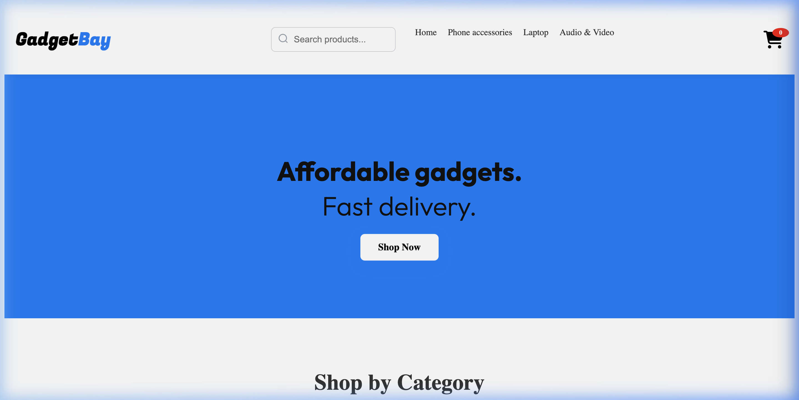
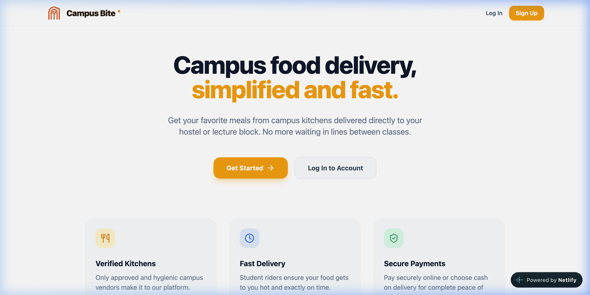
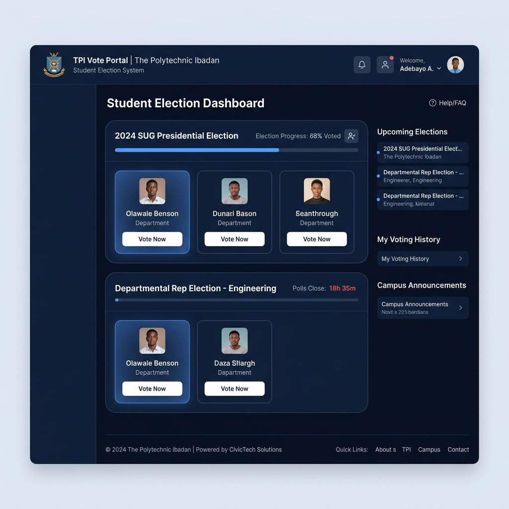
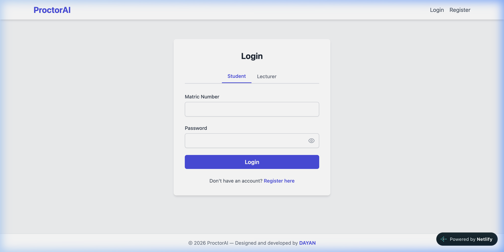

Developer Portfolio
DAYAN
David Ayantade — Lagos, Nigeria
Frontend Developer building modern web experiences,
growing into Software Engineering & AI.
I design and build intentional digital experiences while exploring software, AI, and real-world problems.
0
Years building for the web
0
Projects shipped
Selected Builds
What I've actually built
Six projects, chosen because together they show range — frontend, full-stack, fintech, civic-tech, AI, and a campus ecosystem.


Student Voting Platform
A secure campus electronic voting system for The Polytechnic, Ibadan — authenticated elections and controlled voting workflows. The core security principle: WHO voted ≠ WHAT they voted for. Supports multiple active elections, voter verification, and real-time result tracking.

ProctorAI
An AI-powered online examination and proctoring platform. Students take fullscreen monitored exams; lecturers manage questions and review analytics. Monitoring — face detection, attention tracking, multiple-face and looking-away detection — runs on MediaPipe Tasks Vision. This is evidence of AI exploration, not a claim to being an AI engineer.
Live ↗
Repo not yet public
Additional Projects
- AlertNG — Real-time notification service. Live ↗
- DAYAN OS — A personal operating system for planning, focus, and founder work. In development.
- ShopHub — Vanilla JS e-commerce storefront.
- Student Result Management System — Multi-role access, charts, and PDF export functionality.
- ShopVerse — Full-stack e-commerce application (React / Node.js / MongoDB).
- Other Systems — ACADS, LabSync, Smart Attendance, SubTrack.
What I Build With
Building with
React
Component-driven UI for every recent build.
Build
Frontend · React · JavaScript · TypeScript · CSS
Connect
APIs · Node · Express · Supabase · Authentication
Explore
Python · AI · LLMs · Prompt Engineering · RAG · Agents
Design
Figma · Canva · UI · Design Systems
Journey
How I got here
-
2024
First "Hello, World!"
CS50 Web Programming (edX) — first line of HTML.
-
Discovered Java
National Diploma coursework — first real look at software logic and AI.
-
Started frontend development
Chose frontend because ideas became interactive instantly.
-
Built first real projects
Moved from tutorials to shipping — see Selected Builds.
-
NACOS hackathon — 2nd place
Built UniPay under time pressure with a team, placed 2nd.
-
Modern web experiences
Deeper into React, tooling, and production-grade frontend practice.
-
Software Engineering + AI Now
Actively growing beyond frontend into engineering fundamentals and applied AI.
-
Long-term
Building AI-powered companies from Africa for the world.
About
The person behind the code
I started from curiosity about how technology works, not a fixed plan. It began with Harvard's CS50 Web Programming course on edX — my first "Hello, World!" in HTML — and later, a Java course during my National Diploma studies that changed how I saw software and opened my eyes to AI.
I chose frontend first because it let me see ideas become interactive immediately. That's still what pulls me toward a problem — I want to know what's happening beneath the surface, not just how to make something work.
I'm growing from frontend development into software engineering and AI, shaped by curiosity, consistency, resilience, research, action, and faith. Long-term, I want to build technology and AI products that solve meaningful problems — particularly across Africa.
North Star
Vision with Africa in view
Africa's greatest opportunities lie in solving its biggest challenges — agriculture, logistics, and manufacturing: industries that form the backbone of economic growth but still carry enormous untapped potential. Technology, and eventually AI, can make these systems smarter, more efficient, and more accessible.
My long-term goal is to become one of Africa's leading technology entrepreneurs — building AI-powered companies that modernize these industries and demonstrate that Africa can lead the future of human-centered technology. This is a direction I'm building toward, not something already achieved.
Build for people. Innovate with purpose. Lead with integrity.
Experience & Credentials
Supporting evidence
- National Diploma, Computer ScienceThe Polytechnic, Ibadan — 2024–Present
- Research LeadDepartment, The Polytechnic, Ibadan
- Founder, AYTOVA GLOBALTechnology & Software — August 2026–Present
Writing
I write sometimes.
Thoughts on building, technology, learning, growth, and figuring things out.
Read on Substack →Contact
Let's build something meaningful
Have a project, opportunity, or collaboration in mind? Reach out.